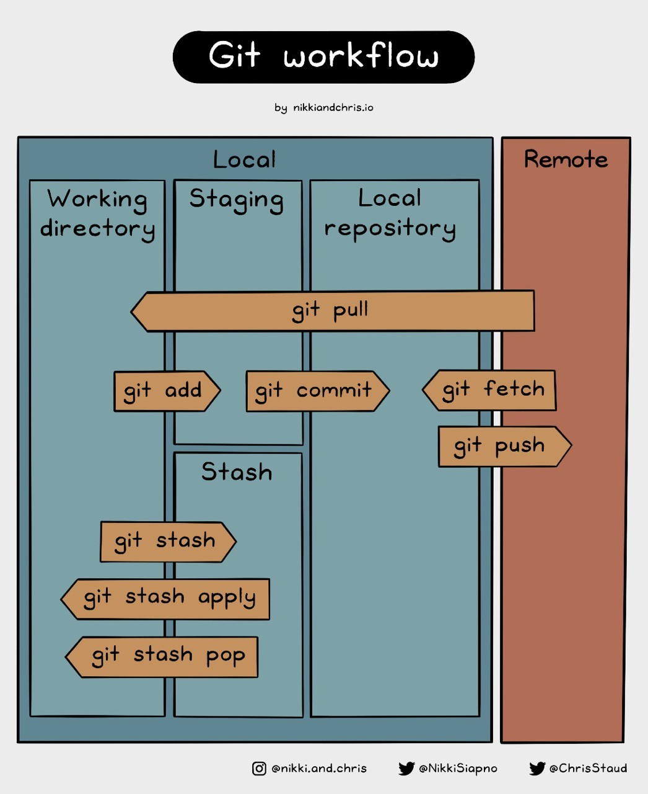

IT tools for theory versioning
Git, CFF citation files & Semantic Versioning
![]()
Git Showcase
Git overview

Git hands-on
- Showcase how git works
- Lecturer creates a private project on Github for this course. This will be the central project for submitting homework.
- Students create their Github accounts; add them as contributors to the course project.
- Show how to commit, push, pull changes.
- Show a merge conflict (make a change in the web frontend and locally) and how to resolve it.
- We start the OSC git tutorial together to weed out technical hurdles. The rest of tutorial is homework.
Never forget …

CFF citation files
Citation File Format schema version 1.2.0
Tell other users how your theory should be cited, what the current version is, and more meta-data:
cff-version: 1.2.0
title: 'AST: Action selection theory'
message: >-
If you refer to this theory, please cite it using the
metadata from this file. This theory has not been peer reviewed yet.
type: report
authors:
- given-names: Felix
family-names: Schönbrodt
email: felix.schoenbrodt@psy.lmu.de
orcid: 'https://orcid.org/0000-0002-8282-3910'
affiliation: Ludwig-Maximilians-Universität München
repository-code: 'https://github.com/nicebread/AST'
abstract: >-
A theoretical model that explains how a donkey solves the
approach-approach conflict of hunger and thirst when the
two sources are separated.
keywords:
- approach-approach conflict
- action selection
- motivation
license: CC-BY-4.0
version: 0.2.5
date-released: '2023-10-30'Citation File Format schema version 1.2.0
How to create
- Create an initial version with the cffinit tool
The tool only knows “software” and “data set” as types. Create it with either of these, and then exchange the message and type fields with:
message: >-
If you refer to this theory, please cite it using the
metadata from this file.
type: report - Save the
.cfffile in the top level folder of your repository.
Citation File Format schema version 1.2.0
Peer review status
- For users of your theory, it is helpful if the peer review status is made explicit.
- This can be done in the
messagefield, e.g.:- “This theory has not been peer-reviewed yet.”
- If the current version is, say,
2.1.0: “The last peer-reviewed version was1.0.4” - “An open peer review of version
1.0.2is published at doi …”
- In future versions of the cff schema, one could also use the
isReviewedByannotation of an identifier.
Semantic Versioning
Semantic Versioning (semver)
Version numbers have three numbers: MAJOR.MINOR.PATCH.
Increment the:
- MAJOR version when you make incompatible API changes
- MINOR version when you add functionality in a backward compatible manner
- PATCH version when you make backward compatible bug fixes
The numbers are plain integers! For example, after 9 comes 10:
0.9.0 → 0.10.0 → 0.11.0 → 1.0.0 → 1.1.0
Some rules & conventions:
- The first development version starts with
0.1.0 - The first stable public release is
1.0.0 - Once a versioned package has been released, the contents of that version must not be modified. Any modifications must be released as a new version.
- Major version X (X.y.z) must be incremented if any backward incompatible changes are introduced. Patch and minor versions must be reset to 0 when the major version is incremented.
- In
git: Create a tag or a release whenever a major or minor version is released:- With tags and releases, you can “pin” and label important commits in your history.
- Users can quickly go to a specific “frozen” version of your repository.
- In our context, there is no real difference between tags and releases, you can use either.
Applied to versioned theories
- Internal development versions do not automatically get a new version number; the commit hash is a sufficient identifier, if specific versions in the history need to be referenced.
- Every release in Github needs an incremented minor or major version.
Example
- First commit to repository:
0.1.0 - Oh, I found and corrected a typo:
0.1.1 - Implemented a minor new feature (that does not break the functionality of the existing features):
0.2.0- Always reset the patch number to zero when increasing the minor or major number
- By and by, more features get implemented:
0.3.0 → 0.4.0 → ... → 0.12.6 - Now we are ready to tag our first public release!
0.12.6 → 1.0.0 - …
- After years of work and minor version updates (e.g.,
1.4.0), we made a huge change that makes the product incompatible to version 1:2.0.0
Patch, Minor, Major changes
So what changes warrant what kind of version increments? For theories it makes sense to think in terms of predictions.
- patch
- The predictions your theory makes do not change, instead you have clarified things, defined terminology, fixed typos, added references etc.
- minor
- The predictions your theory makes have expanded but previous predictions are substantively compatible, i.e. the theory makes the same prediction as older versions for the same settings. All things that would have confirmed or falsified the older version, still apply to the new version. For example, you have included more settings your theory covers; added more previously unrecognized variables; became more certain about some predictions (i.e. range predictions became narrower); added more operationalizations for constructs.
- major
- Evidence that would have confirmed or falsified the previous version does differently affect this version. You changed core tenets of the definition of constructs or their operationalization, changed the functional relationship between two variables, changed the type of a relation (causation to correlation) or the timescale of a process, etc.
Git best practice
The version number is recorded in two places:
- In the
.cfffile - In the names of all tags or releases
Is every commit a new version? That would be very tedious, especially if you are currently developing the theory and have frequent commits. We recommend:
- Maintain a
developerbranch for ongoing development. It is not necessary to update the version number in each development step. - Whenever a stable stage has been reached:
- Increase the version number in the
.cfffile - Record the substantive changes in your
CHANGELOG.md - Push the development branch to the
mainbranch - Create a tag or release on the main branch and write the version number into the label of the tag (see also next slide, “How to create a release?”)
- Increase the version number in the
How to create a release?
- use GitHub’s inbuild release mechanism
- remember to set the tag to the correct version number
- copy the content of your
CHANGELOG.mdinto the release notes. - optional: create a DOI for your release, and archive it with Zenodo
- optional: update your
.cfffile to include the new DOI- This is a hen/egg problem: The doi will not be in the release itself, as it is assigned only after the release.
End
Contact
- @nicebread@scicomm.xyz
- ed.uml.ysp@tdorbneohcs.xilef
- https://www.nicebread.de
- https://github.com/nicebread